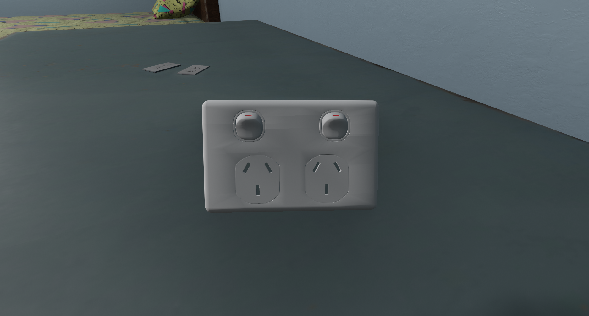
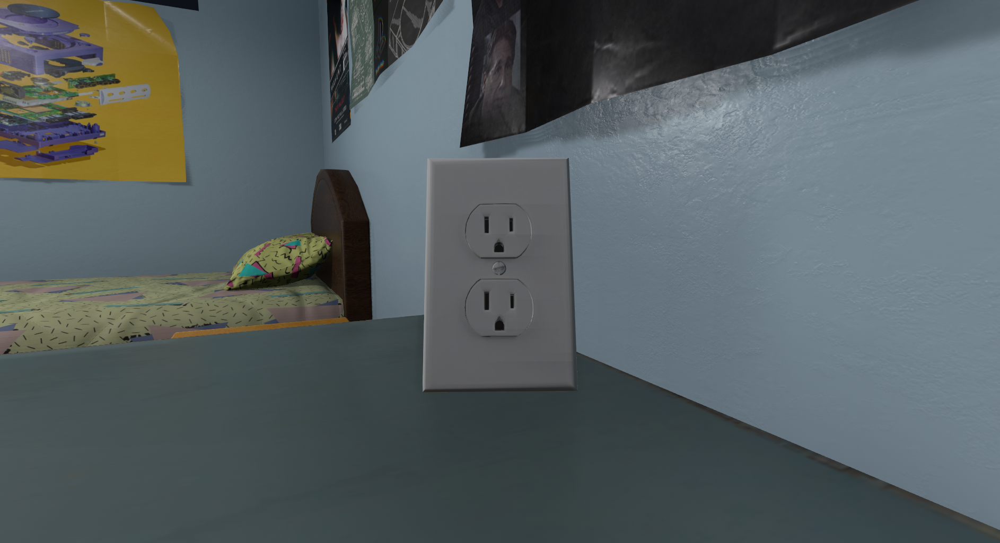

Version: 1.0
A UGC that allows you to plug in compatible consoles into outlets or surge protectors. There are major restrictions to what can be done at the moment, and a very limited number of consoles are supported. If you make UGCs, especially for new systems, use the power cable or peripheral cable to allow it to plug into the wall. As mentioned before, there are limitations. Firstly, due to the current UGC modding stage, you can only have one of each cable for systems, limiting the power outlets and surge protectors to two slots. I still want to leave the controller's cable free. Secondly, because of that limitation, you cannot connect surge protectors to outlets; only consoles can be connected to them. Additionally, because the outlets and surges use peripheral cables, it can technically be plugged into slots it should not if a console uses the peripheral cables for something else.
  Download